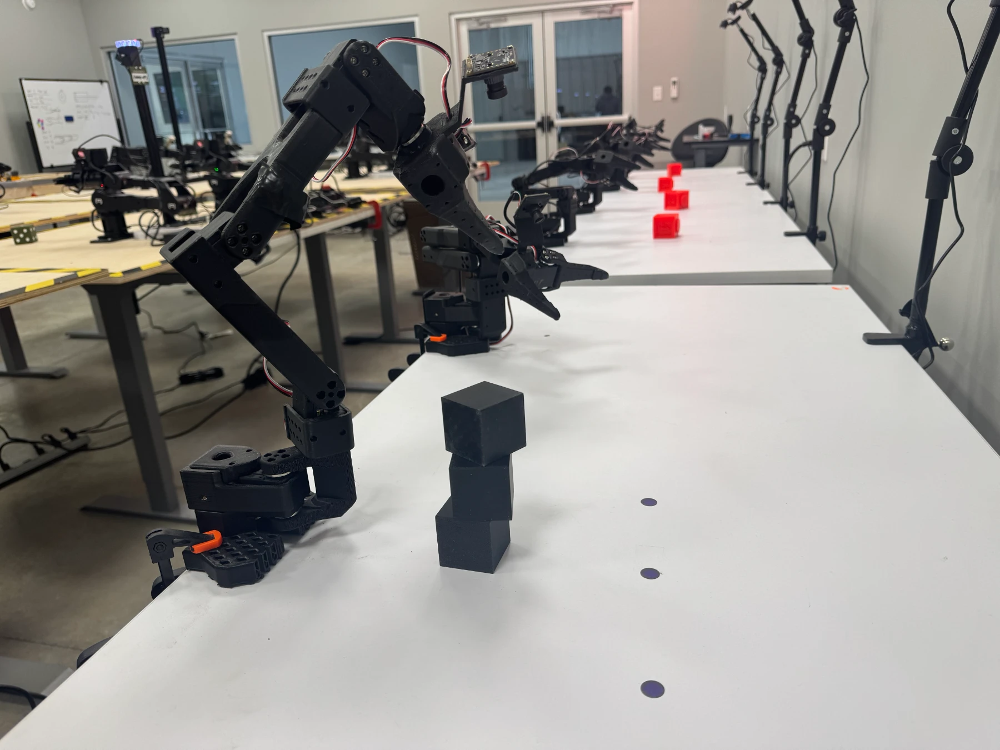

Outcome breakdown
Ten runs per model. Run 17 declined after an approach move; the five other Astra refusals occurred before motion.
Benchmarking frontier models in the physical world

Stack all three cubes.

OpenAI
gpt-6-astra · Medium reasoning
Codex harness
3 / 10 successful
Anthropic
claude-fable-5-2 · Medium reasoning
Claude Code 2.1.327
8 / 10 successful
10 runs per model. Both model and harness changed; physical starting positions were approximate.
Ten runs per model. Run 17 declined after an approach move; the five other Astra refusals occurred before motion.
Successful runs only. Labels are run IDs; black lines mark medians. Time includes the five-second stability criterion.
Successful runs only. Later phases include any retries or rebuilding; shorter phases alone do not demonstrate learning.
Ratios exclude repositioning and are withheld for unresolved outcomes (Pending) or zero eligible pickups (—). A verified lift may still end in a later drop. Run 30 remains partially reviewed.
Successful runs only. Manual footprint estimates relative to the middle starting marker, rounded to five pixels. Perspective is uncorrected; these are not distances in centimetres.
I will write this out.